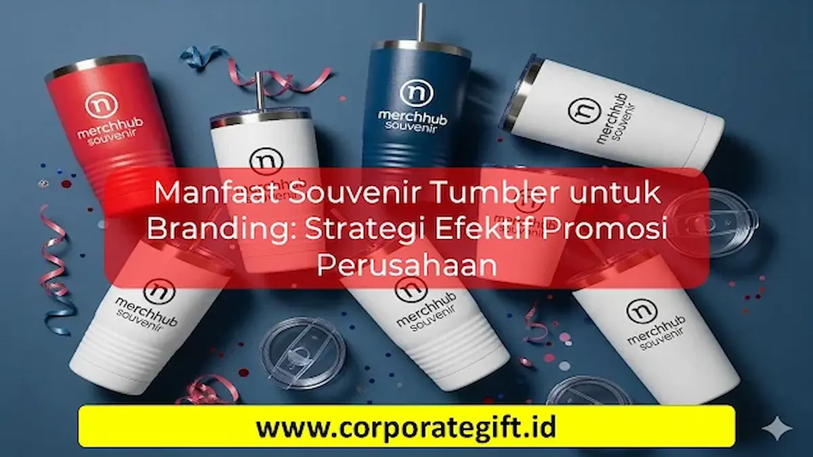

Corporate Gifts ID - Souvenir tumbler perusahaan memiliki peran strategis yang sangat besar dalam aktivitas corporate branding. Karena digunakan berulang kali setiap hari, logo dan pesan kampanye merek Anda akan mendapatkan paparan (brand exposure) yang konsisten, baik di meja kantor, ruang rapat, maupun saat dibawa bepergian oleh karyawan dan klien.
Dibandingkan dengan cinderamata sekali pakai yang cepat terbuang, tumbler custom logo memancarkan kesan profesional, modern, serta mempertegas komitmen perusahaan terhadap pelestarian lingkungan melalui pengurangan sampah plastik. Artikel ini membedah secara menyeluruh manfaat, strategi kurasi, serta pilihan model souvenir tumbler untuk mengoptimalkan efektivitas promosi bisnis Anda.
Poin Kunci Strategi Branding Souvenir Tumbler:
- Eksposur Merek Berkelanjutan: Digunakan rutin setiap hari sehingga memberikan brand recall tinggi tanpa biaya tayang berulang.
- Membangun Citra Peduli Lingkungan (Eco-Friendly): Mendukung kampanye pengurangan botol plastik sekali pakai di tempat kerja.
- Durabilitas Tinggi: Material stainless steel SUS 304 tahan bertahun-tahun, menjaga nilai investasi promosi perusahaan tetap awet.
- Fleksibilitas Desain: Mudah disesuaikan dengan identitas korporat melalui teknik grafir laser, UV print, maupun custom color matching.
Mengapa Souvenir Tumbler Penting untuk Branding
Souvenir tumbler terus menjadi pilihan nomor satu bagi banyak perusahaan multinasional, BUMN, dan instansi pemerintah karena alasan-alasan fundamental berikut:
- Digunakan Sehari-hari: Tumbler yang diletakkan di atas meja kerja memberikan eksposur visual konstan kepada pemiliknya maupun rekan kerja di sekitarnya.
- Memberikan Kesan Profesional: Bodi tumbler berbahan kokoh dengan finishing rapi secara otomatis mengangkat persepsi kemewahan institusi pemberi.
- Kustomisasi Presisi dan Luas: Area bodi tumbler yang memanjang memberikan keleluasaan dalam menempatkan logo, tagline, hingga motif grafis tematik.
- Media Promosi Jangka Panjang: Berbeda dari brosur atau merchandise murah yang mudah rusak, tumbler berkualitas memiliki masa pakai aktif hingga 2 sampai 5 tahun.
- Dukungan Sustainability: Penggunaan botol minum reusable memperkuat narasi ESG (Environmental, Social, and Governance) perusahaan di mata publik.

Kombinasi warna korporat yang harmonis dan teknik cetak logo presisi pada souvenir tumbler promosi.
Manfaat Utama Souvenir Tumbler bagi Perusahaan
Investasi pengadaan merchandise tumbler bukan sekadar membagikan hadiah seremonial, melainkan langkah taktis untuk memperkuat hubungan relasional dan reputasi bisnis:
- Meningkatkan Brand Awareness Organik: Ketika dibawa beraktivitas ke pusat kebugaran, kafe, maupun kendaraan umum, logo perusahaan Anda akan dilihat oleh masyarakat luas tanpa batas geografis.
- Mempererat Hubungan dengan Stakeholder: Hadiah fungsional yang berkualitas tinggi memicu rasa dihargai yang tulus di hati karyawan, klien prioritas, dan mitra bisnis.
- Menciptakan Citra Positif Korporasi: Pemilihan tumbler bermaterial food-grade membuktikan bahwa perusahaan tidak berkompromi terhadap standar kesehatan penerimanya.
- Efisiensi Biaya Pemasaran (High ROI): Dibandingkan dengan iklan digital dengan tarif per klik yang terus naik, biaya per tayang (Cost per Impression) tumbler suvenir sangat rendah karena umurnya yang panjang.
Strategi Memilih Souvenir Tumbler untuk Event Perusahaan
Agar suvenir tumbler yang dipesan menghasilkan dampak maksimal terhadap citra korporat, terapkan strategi pemilihan terukur berikut:
- Sesuaikan dengan Karakter Acara: Pilih model tumbler vacuum flask stainless berpenampilan formal untuk seminar kepemimpinan atau RUPS, dan tumbler sport praktis untuk acara family gathering atau employee outing.
- Pertahankan Konsistensi Identitas Visual: Selaraskan warna bodi tumbler dengan panduan warna korporat (brand guidelines) agar tampak menyatu dengan materi branding lainnya.
- Pilih Material Berkualitas Tinggi: Utamakan material stainless steel SUS 304 tahan karat dengan insulasi vakum ganda (double-wall) atau kaca borosilikat tahan benturan termal.
- Gunakan Packaging Eksklusif: Lengkapi tumbler dengan hardbox custom sleeve, pita satin berlogo, atau kantong spunbond ramah lingkungan untuk menciptakan pengalaman unboxing yang berkesan.
Jenis Souvenir Tumbler yang Cocok untuk Branding Perusahaan
Berikut ragam klasifikasi tumbler yang paling efektif digunakan untuk kampanye branding korporasi:
- Tumbler Stainless Steel Vacuum Insulated: Varian paling populer untuk merchandise perusahaan karena mampu menahan suhu panas dan dingin hingga 12-24 jam.
- Tumbler Kaca Borosilikat dengan Sleeve Silikon: Tampil bersih, higienis, dan tidak menyerap bau, sangat cocok untuk souvenir seminar kesehatan atau farmasi.
- Tumbler Serat Gandum (Wheat Straw Eco Tumbler): Opsi ekonomis berbahan komposit serat gandum biodegradable yang cocok untuk kampanye hijau massal.
- Smart LED Temperature Tumbler: Dilengkapi layar sentuh digital pada tutup botol yang menampilkan suhu cairan secara real-time, memberi kesan futuristik dan canggih.
- Tumbler Mug Gagang dengan Tutup Rapat: Sangat nyaman dipakai di meja kerja kantor untuk menikmati seduhan kopi dan teh hangat sepanjang hari kerja.
Tabel Rekomendasi Jenis Tumbler & Karakteristik Branding
Berikut matriks perbandingan jenis souvenir tumbler untuk membantu menentukan pilihan terbaik sesuai skala acara dan anggaran perusahaan:
| Jenis Tumbler | Kapasitas & Material | Rekomendasi Acara | Karakteristik Branding |
|---|---|---|---|
| Vacuum Flask Stainless SUS 304 | 500 ml, Double Wall Stainless | Seminar Kit, Executive Gift, Klien VIP | Laser Engraving / Pad Print Emas |
| Smart LED Temp Tumbler | 500 ml, Touch Sensor LED | Onboarding Kit, Anniversary Perusahaan | UV Print Full Color & Custom Nama |
| Tumbler Kaca Borosilikat | 400 ml, Borosilicate Glass + Silicone | Workshop Kesehatan, Event Kampus | Sablon Silikon / Emboss Sleeve |
| Eco Wheat Straw Tumbler | 350 - 450 ml, Serat Gandum Organik | CSR Lingkungan, Fun Run, Promosi Akbar | Screen Printing 1-2 Warna Ramah Lingkungan |
| Desk Coffee Mug Tumbler | 380 ml, Handle Gagang Ergonomis | Souvenir Internal Karyawan, Meeting Direksi | Grafir Laser Bodi Matte |
Tips Eksekusi Branding Logo pada Souvenir Tumbler
Keberhasilan suvenir sebagai media promosi sangat bergantung pada kualitas cetak logo. Pertimbangkan teknik pengaplikasian berikut:
- Laser Engraving (Grafir Laser): Mengikis lapisan cat permukaan untuk memunculkan warna dasar logam secara permanen. Hasilnya sangat elegan, anti-luntur, dan tahan gores seumur hidup.
- UV Flatbed Printing: Menggunakan tinta khusus yang dikeringkan dengan sinar ultraviolet. Sangat ideal untuk logo berwarna-warni dengan gradasi kompleks.
- Screen Printing / Pad Printing: Opsi efisien untuk produksi massal ribuan unit dengan logo 1 hingga 2 warna solid.
Kesimpulan dan Konsultasi Pengadaan
Souvenir tumbler bukan sekadar barang pajangan, melainkan investasi branding yang fungsional, tahan lama, dan berorientasi pada masa depan. Melalui pemilihan material food-grade yang tepat, teknik cetak logo yang presisi, serta kemasan yang elegan, cinderamata tumbler perusahaan Anda akan selalu menjadi favorit bagi para penerimanya.
Konsultasikan kebutuhan produksi souvenir tumbler promosi perusahaan Anda bersama tim ahli CorporateGifts.ID. Kami menyediakan layanan pembuatan sampel mockup digital gratis, fleksibilitas MOQ, dan garansi kualitas hasil cetak terbaik melalui layanan permintaan penawaran resmi kami.